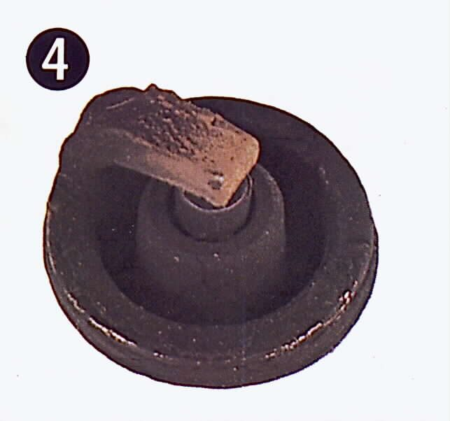

A rich mixture has too much fuel for the air. It burns poorly: the exhaust smells of petrol, puffs black smoke when you open the throttle, the spark plug turns black and sooty, and the bike uses more fuel. A rich engine may feel lazy, bog at full throttle and be hard to start when hot. The extra fuel can also wash oil off the cylinder walls and thin the engine oil.
Is it safe to ride?
With care. Fix it soon: a very rich engine can foul its plug and stop, overheat a catalytic converter, and dilute the engine oil.
Quick checks first
- Is the choke fully off when warm?
- Is the air filter clean and dry?
- Is fuel dripping from the carburettor overflow pipe?
- Does the engine oil smell of petrol or is the level rising?
- Fuel-injected: is the warning light on?
Diagnose it step by step
1Is the choke fully off, and does the black smoke stop once warm?
- Choke stuck partly on: Check the choke or starter valve.
- Choke fine: go to step 2.
2Is the air filter clean, dry and not soaked in oil?
- No: a blocked filter is the most common cause. Clean or replace the air filter. The K-Light 125 manual lists a blocked air filter for a black plug and high consumption.
- Yes: go to step 3.
3Carburettor: does fuel drip from the overflow, or does the engine flood when parked?
- Yes: the float needle is leaking or the float is sinking. Check the float and needle valve. Check the oil for fuel: Oil smells of petrol.
- No: go to step 4.
4Carburettor: have the jets, needle clip or carburettor been changed, or is the needle jet old?
- Refit the correct parts for your model. A worn needle jet lets extra fuel through in the middle range. Clean the carburettor and inspect the needle and needle jet.
5Fuel-injected: is a code stored?
- Yes: Read engine fault codes. A temperature sensor that reads "cold" makes the ECU add fuel: Check the engine sensors.
- No: go to step 6.
6Fuel-injected: is the oxygen sensor tight, and is there an exhaust leak before it?
- The K-Light 125 manual says a loose oxygen sensor makes the ECU think the engine is lean, so it adds fuel. Check the oxygen sensor.
- Sensor fine and still rich: a leaking injector. Check the fuel injector.
7. Two-strokes: blue-white smoke and an oily plug usually mean too much oil, not a rich fuel mixture. See Spark plug is wet with oil and Blue or grey smoke.
After the fix, measure fuel consumption to confirm it has returned to normal.
Causes, most likely first
| Cause | How to confirm | Fix |
|---|---|---|
| Blocked or oily air filter | Visual check | Air filter |
| Choke stuck on | Plunger not seated | Choke check |
| Leaking float needle or sinking float | Overflow drips, flooding | Float check |
| Wrong or worn jets and needle | Parts history, inspection | Clean carburettor |
| Temperature sensor fault (injection) | Code, live data | Sensor check |
| Loose O2 sensor or leaking injector | Workshop live data | O2 check |